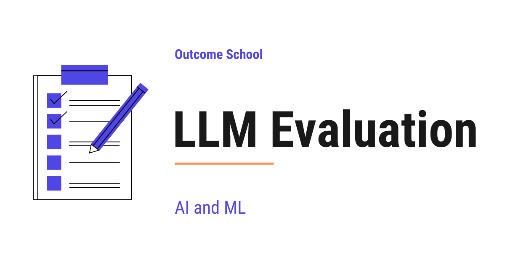
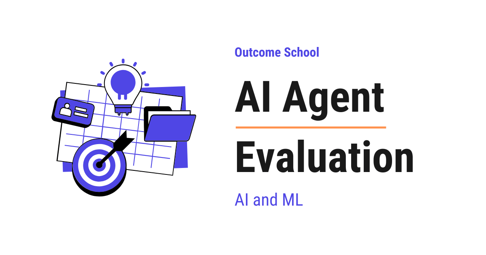
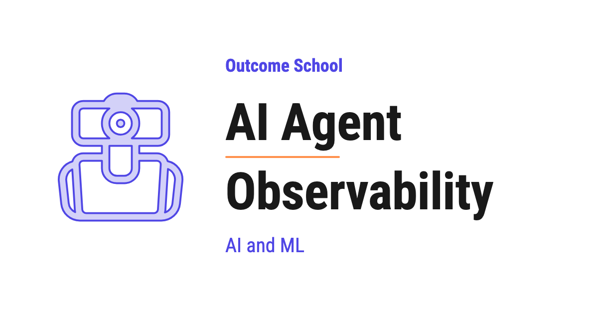

AI Engineering Course
Module 13
Evaluation and Observability
Personal offline study copy. Content © Outcome School / Amit Shekhar. Not for redistribution. See study/NOTICE.md.
Contents
Module 13
Evaluation and Observability
In this module, we will learn how to measure whether our LLM and our agent are actually doing a good job, and how to see what they are doing in production.
By the end of this module, we will be able to build an evaluation suite and trace every step of an agent in production.
Lesson 13.1
What is LLM Evaluation? Metrics, Benchmarks, and Methods Explained

LLM Evaluation is the process of measuring how well a Large Language Model performs on the tasks we expect it to do. We check if its outputs are correct, helpful, safe, and useful for our use case.
In this blog, we will learn about LLM Evaluation. We will understand what it is, why we need it, the main types of evaluation, the automatic metrics and benchmarks we can use, human evaluation, LLM as a Judge, task-specific and safety evaluation, the common challenges, and the best practices to follow.
We will cover the following:
- What is LLM Evaluation?
- Why do we need LLM Evaluation?
- Types of LLM Evaluation
- Automatic Metrics
- Benchmarks
- Human Evaluation
- LLM as a Judge
- Task-Specific Evaluation
- Safety and Red-Teaming Evaluation
- Challenges in LLM Evaluation
- Best Practices
- When to use which method
Let's get started.
What is LLM Evaluation?
LLM Evaluation is the process of measuring how well a Large Language Model performs on the tasks we expect it to do.
In simple words, we give the model some inputs, look at the outputs, and check if the outputs are correct, helpful, safe, and useful. This is how we decide whether a model is good enough for our use case.
Let's say we have built a chatbot using an LLM. Now, the question is: how do we know if our chatbot is actually good? Is it giving correct answers? Is it polite? Is it safe? Is it better than the older version we had last week? To answer all these questions, we need LLM Evaluation.
Why do we need LLM Evaluation?
LLMs are very powerful, but they are not perfect. They can make mistakes. They can give wrong information. They can sound very confident even when they are wrong. This is called hallucination, where the model makes up facts that are not true. They can also produce harmful or biased content.
So, before we ship an LLM to our users, we must know how it behaves. And after we ship it, we must keep checking it to make sure it does not get worse over time.
Here are the main reasons we need LLM Evaluation:
- To compare different models and pick the best one for our use case.
- To compare different versions of the same model after fine-tuning or prompt changes.
- To find weak spots where the model fails so that we can fix them.
- To make sure the model is safe and does not produce harmful content.
- To track quality over time, so that we know if the model is getting better or worse.
- To build trust with our users, our team, and our stakeholders.
Without evaluation, we are just guessing. And guessing is not a good idea when real users depend on our product.
Types of LLM Evaluation
There are four main types of LLM Evaluation. We will learn about each of them in detail.
- Automatic Metrics - We use formulas to score the model output against a reference answer.
- Benchmarks - We test the model on standard datasets that everyone uses.
- Human Evaluation - We ask humans to read the outputs and rate them.
- LLM as a Judge - We use another LLM to score the outputs.
Each of these has its own strengths and weaknesses. In real projects, we usually combine more than one of them.
Beyond these four core methods, there are two cross-cutting areas we will also cover later in this blog: Task-Specific Evaluation and Safety Evaluation. These are not separate methods. They reuse the four above.
Now, let's discuss each one.
Automatic Metrics
Automatic Metrics are simple formulas that compare the model output with a reference answer and give us a score.
The best way to learn this is by taking an example. Suppose we ask the model to translate a sentence from English to French. We already have the correct French translation written by a human. The model gives its own French translation. Now, we want to know how close the model's translation is to the human translation. This is where automatic metrics come into the picture.
Here are the common ones:
BLEU
BLEU is used mostly for translation tasks. It is a precision-based metric. It asks: what fraction of small word groups (called n-grams) in the model output also appear in the reference answer? A higher BLEU score means the model output is closer to the reference. For example, if the reference is "The cat sat on the mat" and the model says "The cat sat on the mat", BLEU is very high. If the model says "A feline rested on the rug", BLEU is low even though the meaning is the same.
ROUGE
ROUGE is used mostly for summarization tasks. It asks: what fraction of n-grams in the reference summary are covered by the model summary? Just like BLEU, a higher score is better.
BERTScore
BERTScore uses contextual embeddings to compare the meaning of the model output with the reference. So, even if the words are different, if the meaning is close, the score is high. Going back to our earlier example, "A feline rested on the rug" would score high against "The cat sat on the mat" because the meaning is almost the same. This makes BERTScore much better than BLEU for tasks where the wording can vary a lot.
METEOR
METEOR is another metric that improves on BLEU by handling synonyms, stemming, and word order. It sits between pure surface matching and full semantic matching.
Perplexity
Perplexity measures how well the model predicts the next token. A lower perplexity means the model assigns a higher probability to the actual next token in the test data. This metric is mostly used during model training to track if the model is learning.
Exact Match
Exact Match is the simplest one. The score is 1 if the model output is exactly the same as the reference answer, and 0 otherwise. This is useful for tasks like math problems or short factual questions.
Note: In modern LLM evaluation, reference-based metrics like BLEU and ROUGE are mostly used in research papers and translation pipelines. For production LLM applications, we usually rely on LLM as a Judge or task-specific evaluation, which we will learn about soon.
Advantage:
- Fast and cheap to run.
- We can run them at scale on millions of examples.
- The scores are repeatable. Same input gives same score every time.
Disadvantage:
- They only check surface similarity. They do not understand meaning.
- A model can give a perfect answer in different words and still get a low score.
- They do not work well for open-ended tasks like creative writing or chat.
This was all about Automatic Metrics. Now, let's learn about Benchmarks.
Benchmarks
Benchmarks are standard datasets that the whole research community uses to test LLMs.
When a new LLM is released, the team behind it usually publishes scores on popular benchmarks. This helps us compare it with other models in a fair way.
Different benchmarks test different skills. Let's group them by category, so that we know what each one is for.
General Knowledge
- MMLU - Tests general knowledge across 57 subjects like history, law, math, and medicine, using multiple-choice questions.
- MMLU-Pro - A harder version of MMLU with 10 answer choices and mandatory chain-of-thought reasoning.
Common Sense Reasoning
- HellaSwag - The model has to pick the most likely ending to a short story.
Coding
- HumanEval - Tests coding ability with simple function-writing problems.
- SWE-bench Verified - Real GitHub issues from open-source projects. Tests whether a model can solve real-world software problems.
- LiveCodeBench - A coding benchmark that uses problems released after the model's training cutoff, so it is contamination-resistant.
Math
- GSM8K - Math word problems at the grade-school level.
- MATH - Harder competition-style math problems.
- AIME - Math olympiad problems used for advanced reasoning.
Frontier Reasoning
- GPQA-Diamond - PhD-level science questions used to separate strong reasoning models from average ones.
- Humanity's Last Exam (HLE) - Over 3,000 expert-level questions across many fields, used as a hard frontier challenge.
Instruction Following
- IFEval - Tests instruction-following with verifiable constraints, like "answer in exactly 3 bullet points".
Tool Use
- BFCL (Berkeley Function-Calling Leaderboard) - Tests how well a model can use tools and call functions, very relevant for agents.
Long Context
- RULER - Tests the effective context window, which is more honest than the nominal context length the model claims.
Truthfulness
- TruthfulQA - Tests if the model gives truthful answers instead of repeating common false beliefs.
Conversation Quality
- Chatbot Arena (LMArena) - Real users chat with two anonymous models side by side and pick the better one. The models are then ranked using an Elo score, just like in chess.
Now that we have seen the categories, we must understand three important ideas that decide how useful a benchmark really is.
- Saturation - Over time, top models start scoring near the ceiling on a benchmark. When every model scores very high, the benchmark stops separating good from great. So, the research community keeps building harder benchmarks to take their place.
- Data contamination - The model may have seen the test questions during training, which makes the scores look higher than they really are. Contamination-resistant benchmarks try to fix this by using problems released after the model's training cutoff.
- Qualification bar - Older or easier benchmarks are not useless. They become a basic check that any serious model must pass before we even look at the harder ones.
Advantage:
- Easy to compare different models, because everyone uses the same dataset.
- Covers a wide range of skills.
- Backed by the research community.
Disadvantage:
- A high score on a benchmark does not always mean the model works well on our specific use case.
- A benchmark can be saturated, contaminated, or both, which makes the scores misleading.
- Public benchmarks rarely match the exact task we care about in our product.
This is how Benchmarks work. Now, let's move to Human Evaluation.
Human Evaluation
Human Evaluation is when real people read the model outputs and rate them.
This is still the gold standard. Humans can judge things that formulas cannot, like tone, helpfulness, creativity, and safety.
Let's say we ask the model to write a short poem. There is no single correct answer here. A formula cannot tell us if the poem is good. But a human reader can.
Here are the common ways to do human evaluation:
- Likert Scale Rating - The human gives a score from 1 to 5 on quality, helpfulness, or safety.
- Pairwise Comparison - The human sees two outputs and picks the better one. This is used in tools like Chatbot Arena.
- Error Annotation - The human marks the exact mistakes in the output, so we know where the model failed.
Advantage:
- Humans can judge meaning, tone, and quality.
- Works for open-ended tasks where there is no single correct answer.
- Gives us deep insights into where the model fails.
Disadvantage:
- Very slow and expensive.
- Different humans may give different scores for the same output.
- Hard to scale to thousands or millions of examples.
One more thing to note. These same pairwise comparisons are also used to train models, not just to score them. We have a detailed blog on Decoding InstructGPT that shows how human rankings turn into a reward model.
This was all about Human Evaluation. Now, let's learn about LLM as a Judge.
LLM as a Judge
LLM as a Judge means we use a strong LLM to score the outputs of another LLM.
Human evaluation is great but very expensive. So, here comes the LLM as a Judge to the rescue. We give a powerful model, like a top-tier LLM, the input prompt and the output, and we ask it to rate the output.
For the sake of understanding, let's see an example. Suppose we want to check if a chatbot's reply is helpful and polite. We can write a prompt like this:
You are an expert evaluator. Read the user question and the assistant reply.
Rate the reply on a scale of 1 to 5 for helpfulness and politeness.
Give a short reason for your rating.
User question: {question}
Assistant reply: {reply}
The judge LLM reads the prompt and gives us a score and a reason. We can then use this score just like a human score.
Advantage:
- Much cheaper and faster than human evaluation.
- Can scale to millions of examples.
- Works well for open-ended tasks where formulas fail.
Disadvantage:
- The judge LLM can have its own biases. The well-known ones are:
- Position bias - The judge can favor the first option, or sometimes the second, when comparing two answers side by side.
- Verbosity bias - The judge can favor longer answers, even when a shorter one is better.
- Self-preference bias - The judge can favor outputs from its own model family.
- The judge is not perfect. It can also make mistakes.
- We must validate the judge by comparing its scores with human scores on a small sample.
If you want to learn more about this, I have a separate blog on LLM as a Judge that goes deeper into this topic.
This is how LLM as a Judge works. Now, it's time to learn about Task-Specific Evaluation.
Task-Specific Evaluation
Task-Specific Evaluation is a layer on top of the four types we just learned. It means we design our own evaluation based on the exact task our LLM is doing.
Under the hood, task-specific evaluation usually uses automatic metrics or LLM as a Judge. But the questions we ask, the inputs we test on, and the things we score are all chosen based on our specific use case.
General benchmarks tell us how a model does on average. But, in our real product, we have a specific task. The evaluation must match that task.
Let's see a few common cases.
RAG (Retrieval Augmented Generation)
In RAG, the model uses a retrieved document to answer a question. So, we need to check two things: did the system retrieve the right document, and did the model use the document correctly to answer the question?
The standard here is the RAGAS four-metric pattern:
- Context Precision - Of the chunks we retrieved, how many are actually relevant?
- Context Recall - Of all the relevant chunks in our corpus, how many did we manage to retrieve?
- Faithfulness (Groundedness) - Is the final answer supported by the retrieved context, or did the model make something up?
- Answer Relevance - Does the answer actually address the user's question?
Context Precision and Context Recall are the classic Precision and Recall metrics applied to retrieval. We have a detailed blog on Precision vs Recall that explains both in depth.
There are popular frameworks that implement these metrics, like RAGAS, DeepEval. We do not need to learn all of them, but we must know that they exist so that we know what to search for when we build a real RAG system.
Agents
In agent systems, the model uses tools and takes many steps. So, we need to check:
- Did the agent pick the right tool?
- Did it pass the correct arguments?
- Did it finish the task?
- How many steps did it take?
Two popular agent benchmarks worth knowing:
- τ-bench (tau-bench) - Evaluates agents in realistic customer-service environments.
- SWE-bench Verified - For coding agents specifically, based on real GitHub issues.
Other names we will see are GAIA for general-assistant tasks, WebArena for browser agents, and BFCL for function-calling accuracy.
Code Generation
For code generation, we run the generated code against test cases. If the tests pass, the code is correct. This is much better than just comparing the code text.
Customer Support Chatbots
For chatbots, we check things like: did the bot answer the question, was the answer polite, did it follow our brand guidelines, and did it escalate to a human when needed.
This way we can use Task-Specific Evaluation to solve any problem in a very simple way.
Safety and Red-Teaming Evaluation
Safety Evaluation is its own category, where we test the model against adversarial and harmful inputs.
So far, we have focused on whether the model gives correct and useful answers. But, there is one more important question: is the model safe?
In safety evaluation, we red-team the model with adversarial prompts. We try jailbreaks, prompt injections, and harmful requests. We check if the model refuses correctly, if it leaks sensitive data, and if it shows bias on sensitive topics. We have a detailed blog on How do LLM guardrails work? that explains how these checks are enforced on the input and the output.
Here are some well-known safety benchmarks:
- HarmBench - Tests model behavior on harmful and adversarial requests.
- AdvBench - A standard set of adversarial prompts used to attack models.
- TrustLLM - A broad evaluation suite covering truthfulness, safety, fairness, robustness, privacy, and ethics.
In production, we also run continuous safety monitoring on real traffic, because new attack patterns appear all the time.
Challenges in LLM Evaluation
LLM Evaluation is hard. Here are the main challenges:
- Open-ended outputs - There is no single correct answer for many tasks, so formulas do not work well. For example, there are a thousand ways to write a good email reply, and no formula can score all of them correctly.
- Data contamination - The model may have seen the test data during training, which makes the scores misleading.
- Cost - Human evaluation is expensive, and running large evaluation sets through powerful LLMs is also expensive.
- Bias in the judge - When we use LLM as a Judge, the judge can have its own preferences that do not match real users.
- Drift over time - The model behavior can change after fine-tuning, prompt updates, or even just because the provider updated the model on the backend. So, we must keep evaluating in production, not just before launch.
- Edge cases - The model may work well on average, but fail badly on rare but important cases. We must check for these and add them to our evaluation set.
Now, the next big question is: how do we deal with all these challenges? The answer is, we follow some best practices.
Best Practices
Here are the best practices that I personally believe in for LLM Evaluation:
- Build a custom evaluation set - Do not rely only on public benchmarks. Build a small but high-quality dataset that matches our real use case.
- Combine many methods - Use automatic metrics for speed, LLM as a Judge for scale, and human evaluation for the final check.
- Validate the judge - When using LLM as a Judge, compare its scores with human scores on a small sample to make sure the judge is reliable.
- Track over time - Run evaluations every time we change the prompt, the model, or the system. Save the results so we can see trends.
- Cover edge cases - Add hard examples, adversarial examples, and safety examples to our evaluation set.
- Keep humans in the loop - Even with automated evaluation, review a small sample by hand every week to catch problems that the metrics miss.
- Measure cost and latency too - Quality is not the only thing that matters. We must also track how fast the model responds and how much each call costs. A perfect answer that takes 30 seconds is not useful in a real product.
This way we can use LLM Evaluation to solve the interesting problem of knowing if our LLM is actually good.
When to use which method
Let me tabulate the differences between the four evaluation methods for your better understanding so that you can decide which one to use based on your use case.
| Method | Speed | Cost | Quality of Judgement | Best For |
|---|---|---|---|---|
| Automatic Metrics | Very Fast | Very Low | Low | Translation, summarization, exact-answer tasks |
| Benchmarks | Fast | Low | Medium | Comparing models at the research level |
| Human Evaluation | Very Slow | Very High | Very High | Final quality check, open-ended tasks |
| LLM as a Judge | Fast | Medium | High | Scaling evaluation for chat, RAG, and agents |
Task-Specific and Safety Evaluation are not in this table, because they sit on top of these four methods. They decide what to test, and then they use these methods to do it.
In a real product, we usually combine all four. We use automatic metrics during training, benchmarks for model selection, LLM as a Judge for daily monitoring, and human evaluation for the final check before shipping.
This way we can use LLM Evaluation to build LLM applications that are reliable, safe, and useful for our users.
Frequently Asked Questions
What is the difference between BLEU and BERTScore?
BLEU checks word overlap, while BERTScore compares meaning. BLEU asks what fraction of n-grams in the model output also appear in the reference, so "A feline rested on the rug" scores low against "The cat sat on the mat". BERTScore uses contextual embeddings, so the same pair scores high because the meaning is almost the same.
Does a high benchmark score mean the model will work well for our product?
No. A high score on a benchmark does not always mean the model works well on our specific use case. Public benchmarks rarely match the exact task we care about, and a benchmark can be saturated, contaminated, or both. So, we should build a small but high-quality evaluation set that matches our real use case.
What is data contamination in LLM evaluation?
Data contamination means the model may have seen the test questions during training. This makes the scores look higher than they really are. Contamination-resistant benchmarks try to fix this by using problems released after the model's training cutoff.
Is it enough to evaluate an LLM once before launch?
No. Model behavior can change after fine-tuning, prompt updates, or even when the provider updates the model on the backend. So, we must keep evaluating in production, not just before launch. We run evaluations every time we change the prompt, the model, or the system, and save the results to see trends.
Should we only measure the quality of the answers?
No. Quality is not the only thing that matters. We must also track how fast the model responds and how much each call costs. A perfect answer that takes 30 seconds is not useful in a real product.
Lesson 13.2
What is LLM as a Judge? How to Use an LLM to Evaluate LLM Outputs

LLM as a Judge is a technique where we use a large language model to evaluate the output of another large language model. The judge LLM reads the output, compares it against our criteria, and gives a score or a verdict with a reason.
In this blog, we will learn about LLM as a Judge. We will also see how it works, why we need it, and how we can use it to evaluate the output of other LLMs.
We will cover the following:
- What is LLM as a Judge?
- Why do we need LLM as a Judge?
- How does LLM as a Judge work?
- Types of LLM as a Judge.
- Steps to build an LLM Judge.
- A prompt template for LLM as a Judge.
- Chain-of-thought judging (G-Eval).
- Biases in LLM as a Judge.
- Best practices for LLM as a Judge.
- Real-world use cases of LLM as a Judge.
Let's get started.
What is LLM as a Judge?
LLM as a Judge is a technique where we use a large language model to evaluate the output of another large language model. The judge LLM reads the output, compares it against our criteria, and gives a score or a verdict with a reason.
In simple words, LLM as a Judge = LLM + Judge. We are using one LLM to judge the work of another LLM.
Let's say we have built a chatbot using an LLM. The chatbot gives answers to user questions. Now, we want to know how good these answers are. We can ask a human to read every answer and rate it. But this is slow and expensive. Instead, we can ask another LLM to read the answers and rate them for us.
This is the core idea of LLM as a Judge.
The judge LLM acts like a teacher checking the homework of a student. The student is another LLM. The teacher reads the homework, compares it with the expected answer, and gives a grade with feedback.
Why do we need LLM as a Judge?
Before jumping into how it works, we must understand the problem it solves.
When we build an application using LLMs, we need to evaluate the quality of the output. The output of an LLM is open-ended text. There is no single correct answer. Two different answers can both be correct.
Let's see the traditional ways of evaluating LLM outputs and the problems with each approach.
Approach 1: Human evaluation.
We can ask humans to read every output and rate it. This gives high quality results because humans understand language well. But humans are slow. They are expensive. They get tired. They cannot evaluate millions of outputs every day.
The issue with this approach is that it does not scale. Let's see how the next approach solve this issue.
Approach 2: Rule-based metrics like BLEU and ROUGE.
We can use rule-based metrics that compare the output with a reference answer word by word. These metrics are fast and cheap. But they only check word overlap. They miss the meaning. An answer can be correct but use different words. These metrics will give it a low score.
The issue with this approach is that it does not understand meaning. Let's see how the next approach solve this issue.
Approach 3: LLM as a Judge.
We use another LLM to read the output and judge its quality. The LLM understands language. It understands meaning. It can compare two answers even if they use different words. It is fast. It is cheap compared to humans. It can evaluate millions of outputs every day.
So, here comes LLM as a Judge to the rescue.
It combines the quality of human evaluation with the speed and scale of automated metrics. This is the beauty of LLM as a Judge.
One more thing to notice. Studies have shown that strong LLM judges agree with human evaluators more than 80% of the time. This is roughly the same rate at which two humans agree with each other on the same task. So, a well-built LLM Judge is almost as reliable as a human evaluator, but much faster and much cheaper. This is the reason LLM as a Judge has become the default way of evaluating LLM applications.
The deeper question behind all of this is whether a task has an exact checker at all. We have a detailed blog on AI Is Only as Good as Our Definition of Done that explains this in depth.
How does LLM as a Judge work?
The best way to learn this is by taking an example.
Let's say we have built a customer support chatbot. A user asks a question. The chatbot gives an answer. We want to know if the answer is helpful.
Here is how LLM as a Judge works step-by-step:
- Step 1: We take the user question and the chatbot answer.
- Step 2: We write a prompt for the judge LLM. The prompt tells the judge what to do. It includes the question, the answer, and the rules for judging.
- Step 3: We send this prompt to the judge LLM.
- Step 4: The judge LLM reads everything and gives a score with a reason.
- Step 5: We use this score to decide if our chatbot is doing a good job.
A simple prompt for the judge can be as below:
You are an expert evaluator. Read the user question and the assistant answer below. Rate the answer on a scale of 1 to 5 based on helpfulness.
User question: How do I reset my password?
Assistant answer: To reset your password, click on the Forgot Password link on the login page. Enter your email address. You will receive a reset link in your email.
Give your score as a number from 1 to 5. Also give a short reason for your score.
Here, we have given the judge a clear task. We have given the question, the answer, and the scoring rule.
The judge LLM will respond as below:
Score: 5
Reason: The answer is clear, step-by-step, and directly addresses the user question. It tells the user exactly what to do.
This is how LLM as a Judge works.
In a real system, this judge usually sits as one step inside a bigger flow, where a low score sends the work back for another attempt. We have a detailed blog on Graph Engineering that explains how such steps are wired together.
Types of LLM as a Judge
There are four common ways to use LLM as a Judge. Let's learn about each of them.
Type 1: Single answer scoring.
We give the judge one answer and ask it to rate the answer on a scale, for example 1 to 5 or 1 to 10. The judge gives a score based on our criteria.
This is useful when we want to track the quality of our LLM over time. We can see if the average score is going up or down.
Type 2: Pairwise comparison.
We give the judge two answers to the same question. We ask the judge to pick the better one. The judge picks Answer A or Answer B and gives a reason.
This is useful when we are comparing two models or two versions of a prompt. We want to know which one is better.
Type 3: Reference-based evaluation.
We give the judge an answer and a reference answer. The reference answer is the correct or expected answer. The judge compares the two and gives a score based on how close they are in meaning.
This is useful when we have a ground truth answer and we want to check how close our LLM output is to that ground truth.
Type 4: Rubric-based evaluation.
We give the judge a rubric with multiple criteria. For each criterion, the judge gives a separate score. For example, the rubric can have accuracy, helpfulness, clarity, and tone as separate criteria. The judge gives a score for each one and an overall score at the end.
This is useful when quality is not a single number. A good answer must be correct, clear, and polite at the same time. Rubric-based evaluation tells us exactly where the answer is strong and where it is weak. This is the most common type used in production today.
Now, we have understood the types of LLM as a Judge. Let's see how we can build one.
Steps to build an LLM Judge
Now, let's learn how to build our own LLM Judge step-by-step.
Step 1: Define the evaluation criteria.
First, we need to be very clear about what we want to evaluate. Are we evaluating helpfulness? Accuracy? Tone? Safety? We must write down the criteria in simple words.
For example, for a customer support chatbot, the criteria can be:
- Is the answer correct?
- Is the answer clear?
- Is the answer polite?
Step 2: Choose the judge model.
We need to pick which LLM will act as our judge. Generally, we use a strong model like GPT-5, Claude Opus 4.7, or Gemini 3.1 Pro as the judge. The judge must be at least as capable as the model we are evaluating. Otherwise, the judge will miss the mistakes.
We can also explore open-source judge models when we do not want to send our data to a closed API like OpenAI or Anthropic.
Step 3: Write the judge prompt.
We write a prompt that tells the judge what to do. The prompt must include:
- The task description.
- The user input.
- The model output to be judged.
- The scoring scale and the rules.
- The output format we want.
Step 4: Run the judge on a sample.
We run the judge on a small sample of outputs. We read the scores and reasons given by the judge. We check if the judge is doing a good job.
Step 5: Compare with human ratings.
We ask humans to rate the same sample. We compare the human ratings with the judge ratings. If they match closely, our judge is good. If they do not match, we need to improve the judge prompt.
Step 6: Iterate and improve.
Based on the comparison, we update the judge prompt. We add more rules. We give better examples. We test again. We keep doing this until the judge ratings match the human ratings.
Step 7: Use the judge at scale.
Once we trust the judge, we can use it to evaluate thousands or millions of outputs. We can also use it to compare different models, different prompts, and different versions of our application.
Now, our LLM Judge is ready.
A prompt template for LLM as a Judge
Let's see a complete prompt template that we can use for LLM as a Judge.
You are an expert evaluator. Your task is to evaluate the response given by an AI assistant to a user question.
Evaluate the response based on the following criteria:
1. Accuracy: Is the response factually correct?
2. Helpfulness: Does the response solve the user's problem?
3. Clarity: Is the response easy to understand?
User question:
{user_question}
Assistant response:
{assistant_response}
Give your evaluation in the following format:
Accuracy score (1-5): <score>
Helpfulness score (1-5): <score>
Clarity score (1-5): <score>
Overall score (1-5): <score>
Reason: <short explanation of your scores>
Be fair and consistent. Base your scores only on the response given above.
Here, we have built a clear and structured prompt. The judge LLM knows the task, the criteria, the input, and the output format. This makes the judge reliable and consistent.
Chain-of-thought judging (G-Eval)
The basic prompt we have built so far works well, but we can make it much better. The trick is to ask the judge to think first and score later. This technique is called chain-of-thought judging and it is also known as G-Eval.
In simple words, G-Eval = Generate evaluation steps + Score. The judge first writes down the steps it will use to evaluate, then applies those steps to the answer, and only then gives a score.
Let's see why this works.
When we ask the judge to give a score directly, the judge picks a number quickly without much thinking. The score is often shallow. But when we ask the judge to first write the evaluation steps, the judge slows down. It reads the answer more carefully. It applies each step one by one. The final score is much more reliable.
A G-Eval style prompt can be as below:
You are an expert evaluator. Your task is to evaluate the response below.
Criterion: Helpfulness
Step 1: Write down the evaluation steps you will use to check if the response is helpful. Think carefully.
Step 2: Apply each step to the response one by one. Write your reasoning for each step.
Step 3: Based on your reasoning, give a final score from 1 to 5.
User question:
{user_question}
Assistant response:
{assistant_response}
Now, follow Step 1, Step 2, and Step 3 in order.
Here, we have asked the judge to think before scoring. The judge first builds its own checklist, then applies it, and finally gives the score. This is the same idea as chain-of-thought prompting, applied to evaluation.
Note: G-Eval gives much better agreement with human ratings than the basic scoring prompt. If we want a reliable judge, we must use chain-of-thought judging.
Biases in LLM as a Judge
LLM as a Judge is powerful, but it is not perfect. The judge LLM can have biases. We must understand these biases so that we can handle them in the right way.
Style bias.
This is the most dominant bias in LLM judges today. The judge often prefers a certain writing style, for example bullet points over paragraphs, or formal tone over casual tone. This style preference can be very strong and it can override the actual quality of the answer. The judge rewards the look and feel of the answer, not just the content. So, we must tell the judge in the prompt exactly what style is expected for our use case.
Position bias.
When we ask the judge to pick between Answer A and Answer B, the judge often prefers the answer that comes first. This is called position bias. To fix this, we can swap the order and run the judge twice. We take the average of the two results.
Verbosity bias.
The judge often prefers longer answers, even when the shorter answer is better. The judge sees more words and thinks the answer is more detailed. To fix this, we can tell the judge in the prompt to not prefer longer answers.
Self-preference bias.
This bias shows up at the time of evaluation. When the judge is asked to compare two answers, it gives a higher score to the answer that was generated by itself or by a model from its own family. For example, if we ask GPT-5 to pick between a GPT-5 answer and a Claude answer, GPT-5 picks itself more often than it should. The judge is doing the comparison fairly in its own mind, but it has a hidden preference for its own style. To fix this, we can use a different model as the judge, or use a Panel of Judges from different families.
Preference leakage.
This is a bigger problem and it works at the pipeline level, not at the single answer level. Self-preference bias is the mechanism. Preference leakage is what happens when this mechanism contaminates our whole evaluation setup.
Let's see an example. Suppose we use GPT-5 to generate synthetic training data for our model. Then we use GPT-5 again as the judge to evaluate the trained model. The judge silently rewards answers that look like GPT-5 style, because the training data already pushed our model in that direction. Our scores look amazing on paper. But in the real world, with real users, the model does not perform as well as the scores suggest.
The data generator and the judge are not independent anymore. The eval is contaminated. To avoid this, the judge model family must be different from the family used to generate training data, prompts, or any other input that touches our pipeline.
Authority and bandwagon bias.
The judge often defers to confident-sounding answers and answers that quote experts or sources. Even if the content is wrong, the judge gives a high score because the answer sounds authoritative. Similarly, the judge can follow the crowd. If many earlier answers agree, the judge tends to agree as well, even when it should not. To fix this, we must remind the judge in the prompt to focus only on correctness, not on tone or confidence.
Now, we have understood the biases. Even frontier judge models still fail on bias-heavy tasks, so we must always test our judge against these biases before trusting it in production.
Best practices for LLM as a Judge
Few important points to keep in mind:
- Use a strong judge model. The judge must be at least as capable as the model being judged.
- Write a clear prompt. The prompt must include the task, the criteria, the input, the output, and the format.
- Give examples in the prompt. Few-shot examples help the judge understand what a good score looks like.
- Use a clear scoring scale. A 1 to 5 scale is easier than a 1 to 100 scale. The judge gives more consistent scores on a small scale.
- Ask for a reason with the score. This makes the judge think more carefully. It also helps us debug the judge.
- Validate against humans. Always compare the judge ratings with human ratings on a sample. This tells us if we can trust the judge.
- Handle position bias. When doing pairwise comparison, swap the order and average the results.
- Use a Panel of LLM Judges. This is also called the Jury approach. We use more than one judge model from different families and average the scores. A panel reduces self-preference bias and gives more reliable results than any single judge.
- Keep the criteria simple. Do not ask the judge to evaluate too many things at once. Break it into separate evaluations if needed.
If we follow these practices, our LLM Judge will be reliable and useful.
Real-world use cases of LLM as a Judge
LLM as a Judge is used in many real-world scenarios across the industry. Let's see some of them.
Model evaluation.
When we train or fine-tune an LLM, we need to know if the new version is better than the old version. We use LLM as a Judge to compare the outputs side by side. This is much faster than human evaluation.
Chatbot quality monitoring.
In a production chatbot, we cannot read every conversation. We use LLM as a Judge to score the conversations automatically. We get a daily report on how well the chatbot is doing.
Content moderation.
We can use LLM as a Judge to check if the output is safe. The judge reads the output and decides if it contains harmful content. We block such outputs before they reach the user. This is exactly how an output guardrail works, and we have a detailed blog on How do LLM guardrails work? that explains it step by step.
RAG system evaluation.
In a Retrieval-Augmented Generation (RAG) system, we need to check if the answer is grounded in the retrieved documents. LLM as a Judge can check if the answer matches the documents. This helps us catch hallucinations, where the LLM makes up information that is not present in the documents.
Prompt engineering.
When we try different prompts for the same task, we need to know which prompt gives the best results. LLM as a Judge helps us compare prompts at scale.
Agent trajectory evaluation.
In agentic systems, the agent takes multiple steps to solve a task. The agent calls tools, reads results, plans next actions, and so on. This full sequence of steps is called the trajectory. LLM as a Judge can read the full trajectory and decide if the agent picked the right tools, used them correctly, and reached the right answer. This is one of the fastest growing applications of LLM as a Judge because agentic systems are hard to evaluate with any other method. We have a detailed blog on AI Agent Evaluation that explains this in depth.
This way we can use LLM as a Judge to solve any evaluation problem in a very simple way.
Now we must have understood LLM as a Judge. It is a powerful technique that combines the quality of human evaluation with the speed and scale of automation. As LLM applications grow, LLM as a Judge becomes more and more important because we cannot scale human evaluation easily, but we can scale LLM evaluation very easily.
I will highly recommend that we always validate our LLM Judge against human ratings before trusting it.
This way we can use LLM as a Judge to evaluate the quality of our AI systems and build better products for our users.
Frequently Asked Questions
Is LLM as a Judge as reliable as human evaluation?
Almost. Studies have shown that strong LLM judges agree with human evaluators more than 80% of the time, which is roughly the same rate at which two humans agree with each other. So, a well-built judge is almost as reliable as a human, but much faster and much cheaper.
Why not just use BLEU or ROUGE to evaluate LLM outputs?
BLEU and ROUGE only check word overlap, so they miss the meaning. An answer can be correct but use different words, and these metrics will give it a low score. An LLM judge understands meaning, so it can compare two answers even if they use different words.
Can the same model be used as both the generator and the judge?
It is better not to. A judge gives higher scores to answers from itself or its own model family, which is called self-preference bias. If the same family also generates the training data, the evaluation gets contaminated. The judge model family must be different from the family used anywhere else in the pipeline.
How do we know if we can trust our LLM Judge?
We validate it against human ratings. We ask humans to rate a small sample, run the judge on the same sample, and compare the two. If they match closely, the judge is good. If not, we improve the judge prompt and test again until the ratings match.
Should the judge model be smaller than the model being evaluated?
No. The judge must be at least as capable as the model we are evaluating. Otherwise, the judge will miss the mistakes. Generally, we use a strong model as the judge, and we can explore open-source judge models when we do not want to send our data to a closed API.
Lesson 13.3
How to Evaluate AI Agents? Metrics, Methods, and Best Practices

AI Agent Evaluation is the process of measuring how well an AI Agent performs the tasks we give it, from the final result to every step and tool it used in between.
In this blog, we will learn about AI Agent Evaluation. We will also see why it is different from LLM Evaluation, the types of evaluation we can do, the key metrics we must track, the methods we can use, and the best practices to follow.
We will cover the following:
- What is an AI Agent?
- What is AI Agent Evaluation?
- Why do we need AI Agent Evaluation?
- How is AI Agent Evaluation different from LLM Evaluation?
- Types of AI Agent Evaluation
- Outcome Evaluation
- Trajectory Evaluation
- Tool Use Evaluation
- Planning Evaluation
- Key Metrics for AI Agents
- Agent Benchmarks
- Methods to Evaluate AI Agents
- Frameworks and Tools for AI Agent Evaluation
- Challenges in AI Agent Evaluation
- Best Practices
Let's get started.
What is an AI Agent?
Before jumping into AI Agent Evaluation, we must know what an AI Agent is.
An AI Agent is a system that uses an LLM to plan, take actions using tools, and finish a task on its own.
In simple words, a normal LLM only gives us text. But an AI Agent does not stop at text. It can call tools, read files, search the web, run code, and take many steps to reach a goal.
Let's say we ask an AI Agent: "Book a flight from Delhi to Bangalore on Friday." The agent will think, call a flight search tool, read the results, pick a good flight, call a booking tool, and finally give us the confirmation. The agent does many steps in between, and we only see the final result.
This is the power of agents. They make our life easier. But, because they take many steps and many actions, they can also fail in many new ways. This is why we need a special way to evaluate them.
What is AI Agent Evaluation?
AI Agent Evaluation is the process of measuring how well an AI Agent performs on the tasks we expect it to do.
In simple words, we give the agent some tasks, watch what it does from start to finish, and check if it finished the task correctly, used the right tools, took the right steps, and did it all without wasting time or money.
Let's say we have built an AI Agent that helps users book flights. Now, the question is: how do we know if our agent is actually good? Did it pick the right flight? Did it use the booking tool correctly? Did it ask the user for missing information? Did it finish the task in a reasonable number of steps? To answer all these questions, we need AI Agent Evaluation.
Why do we need AI Agent Evaluation?
AI Agents are powerful, but they are also risky. They take real actions in the real world. They send emails, write to databases, spend money, and talk to users on our behalf. So, a small mistake by an agent can cause a big problem.
So, before we ship an AI Agent to our users, we must know how it behaves in many situations. And after we ship it, we must keep checking it to make sure it does not get worse over time.
Here are the main reasons we need AI Agent Evaluation:
- To check if the agent finishes the task correctly.
- To make sure the agent uses the right tool at the right time.
- To track how many steps and how much money the agent uses for each task.
- To find weak spots where the agent fails so that we can fix them.
- To compare different versions of the agent after prompt changes or model changes.
- To make sure the agent is safe and does not take harmful actions.
How is AI Agent Evaluation different from LLM Evaluation?
This is an important question. Most people think AI Agent Evaluation is the same as LLM Evaluation. But it is not.
In LLM Evaluation, we mostly check the final text output. The model takes an input and gives an output, and we score the output.
But, in AI Agent Evaluation, the agent does many things between the input and the final output. It plans, picks tools, calls tools, reads results, makes decisions, and tries again if something fails. So, we must check not just the final answer, but also everything that happened in between.
Let me tabulate the differences between LLM Evaluation and AI Agent Evaluation for your better understanding.
| Aspect | LLM Evaluation | AI Agent Evaluation |
|---|---|---|
| What we check | Final text output | Final output + all steps in between |
| Number of steps | One step | Many steps |
| Tool use | No tools | Many tool calls |
| Cost tracking | One LLM call | Many LLM calls + tool calls |
| Failure modes | Wrong text | Wrong tool, wrong order, infinite loop, and etc. |
This is how AI Agent Evaluation is different from LLM Evaluation. Now, let's learn about the types of AI Agent Evaluation.
Types of AI Agent Evaluation
There are four main types of AI Agent Evaluation. We will learn about each of them in detail.
- Outcome Evaluation - We check only the final result of the task.
- Trajectory Evaluation - We check every step the agent took to reach the result.
- Tool Use Evaluation - We check how the agent used the tools.
- Planning Evaluation - We check the quality of the agent's plan.
Each of these has its own strengths and weaknesses. In real projects, we usually combine more than one of them.
Now, let's discuss each one.
Outcome Evaluation
Outcome Evaluation means we only look at the final result of the task and ignore everything in between.
Suppose we ask our agent: "Find the cheapest flight from Delhi to Bangalore on Friday and book it." We do not care if the agent took 5 steps or 50 steps. We only care: did it book the cheapest flight on Friday? If yes, the outcome is correct. If no, the outcome is wrong.
This is the simplest form of evaluation, and it works very well for tasks where we have a clear right answer.
Here are some common outcome metrics:
- Task Success Rate - The percentage of tasks the agent finished correctly.
- Final Answer Accuracy - Did the final answer match the expected answer?
- Goal Completion - Did the agent reach the user's goal?
Advantage:
- Simple to define and measure.
- Matches what the user actually cares about.
- Works well when there is a clear correct answer.
Disadvantage:
- We do not know why the agent failed.
- An agent can get the right answer by luck after taking many wrong steps.
- An agent can get the right answer but waste a lot of money and time.
Outcome Evaluation only works when we can say what a correct outcome is. We have a detailed blog on AI Is Only as Good as Our Definition of Done that covers this end to end.
This was all about Outcome Evaluation. Now, let's learn about Trajectory Evaluation.
Trajectory Evaluation
Trajectory Evaluation means we look at every step the agent took, in the right order, to reach the result.
In simple words, the trajectory is the full path of actions and thoughts that the agent went through. We check this path step by step.
Let's say our agent has to answer the question: "What is the weather in Bangalore tomorrow, and should I carry an umbrella?" A good trajectory looks like this:
- Step 1: Call the weather tool with city = Bangalore and date = tomorrow.
- Step 2: Read the result. There is a 70% chance of rain.
- Step 3: Decide that the user should carry an umbrella.
- Step 4: Reply to the user.
Now, if the agent skipped Step 1 and just guessed the answer, the trajectory is wrong even if the final answer is correct by luck.
Here is what we check in trajectory evaluation:
- Exact Match - Did the agent follow the exact expected sequence of steps?
- In-Order Match - Did the agent perform the required steps in the correct order, even if it added a few extra steps?
- Any-Order Match - Did the agent perform all the required steps, even if the order was different?
- Precision - Of all the steps the agent took, how many were useful?
- Recall - Of all the steps that were needed, how many did the agent take?
The last two are the same Precision and Recall we use to score any classification system. We have a detailed blog on Precision vs Recall that explains both step by step.
Advantage:
- We can find exactly where the agent went wrong.
- We can tell luck apart from real understanding.
- It helps us debug the agent and improve it.
Disadvantage:
- It is hard to define one correct trajectory, because there are often many good paths.
- It is more expensive to evaluate than just checking the final answer.
- It can be too strict if we demand an exact match.
This is how Trajectory Evaluation works. But before we can evaluate a trajectory, we must first capture every step the agent took - and capturing those steps is exactly what AI Agent Observability gives us. Now, let's move to Tool Use Evaluation.
Tool Use Evaluation
Tool Use Evaluation means we check how the agent used the tools available to it.
Tools are the hands of the agent. If the agent picks the wrong tool, or passes wrong arguments, the whole task can fail. So, we must check tool usage very carefully.
Here are the main things we check:
- Tool Selection - Did the agent pick the correct tool for the job?
- Argument Correctness - Did the agent pass the right arguments to the tool?
- Tool Call Success - Did the tool call return a valid result, or did it throw an error?
- Result Handling - Did the agent use the tool result correctly to take the next step?
- No Hallucinated Tools - Did the agent try to call a tool that does not exist?
Let's see an example. Suppose our agent has these tools: search_flights, book_flight, and send_email. The user says: "Book the cheapest flight to Bangalore on Friday."
A good agent will first call search_flights, then call book_flight with the cheapest result, and then call send_email to confirm. A bad agent can call send_email first, or call book_flight with no flight selected, or call a tool that does not exist like cancel_flight. Tool Use Evaluation helps us catch all these mistakes.
Advantage:
- Catches the most common cause of agent failures.
- Easy to automate, because tool calls are structured.
- Helps us improve the tool descriptions and prompts.
Disadvantage:
- Does not tell us about the final quality of the answer.
- Needs a clear ground truth for which tool to use, which is sometimes hard to define.
This was all about Tool Use Evaluation. Now, it's time to learn about Planning Evaluation.
Planning Evaluation
Planning Evaluation means we check the quality of the plan that the agent makes before taking actions.
Many agents first write a plan, and then follow the plan step by step. If the plan is bad, the agent will fail no matter how good the tools are.
Let's say our agent has to plan a trip. A good plan looks like this:
- Step 1: Find flights for the given dates.
- Step 2: Pick the cheapest flight that fits the user's schedule.
- Step 3: Find hotels near the destination.
- Step 4: Pick the best-rated hotel within the budget.
- Step 5: Send the full itinerary to the user.
Here is what we check in planning evaluation:
- Completeness - Does the plan cover all the steps needed to finish the task?
- Correctness - Are the steps in the right order?
- Feasibility - Can each step actually be done with the tools available?
- Efficiency - Is the plan short and clean, or does it have wasted steps?
Advantage:
- Catches mistakes early, before the agent wastes time running a bad plan.
- Helps us understand how the agent thinks.
Disadvantage:
- Only works for agents that produce a plan upfront.
- Hard to define one correct plan, because there are often many good plans.
Planning Evaluation is very useful for complex tasks where the agent must think before acting.
We have a detailed blog on Plan-and-Execute Agent that explains the plan-first agent pattern in depth.
Key Metrics for AI Agents
Now that we have learned about the types of evaluation, it's time to learn about the key metrics that we track for AI Agents.
Here are the most important ones:
- Task Success Rate - The percentage of tasks the agent finished correctly. This is the most important metric. If our agent has a low success rate, nothing else matters.
- Tool Call Accuracy - The percentage of tool calls that were correct and useful.
- Number of Steps per Task - How many steps did the agent take to finish the task? Fewer steps usually means a better agent.
- Cost per Task - How much money did the agent spend on LLM calls and tool calls to finish one task? This is critical for production agents.
- Latency per Task - How long did the agent take to finish the task? Users will not wait forever.
- Recovery Rate - When a tool call fails, can the agent recover and still finish the task?
- Safety Score - Did the agent take any harmful or risky action that it should not have taken?
- Loop Detection - Did the agent get stuck in an infinite loop, calling the same tool again and again?
In a real product, we must track all of these together. A high success rate is useless if every task costs us a lot of money or takes a very long time. Most of these numbers are really a verdict on the agent's loop, and we have a detailed blog on Loop Engineering that explains how to design that loop.
Agent Benchmarks
Just like LLMs, AI Agents also have benchmarks to compare them. Different benchmarks test different skills. Let's group them by category, so that we know what each one is for.
Function Calling
- BFCL (Berkeley Function-Calling Leaderboard) - Tests how well a model picks the right function and passes correct arguments. The most cited benchmark for tool use.
Customer Service Agents
- τ-bench / τ²-bench (tau-bench) - Evaluates agents in realistic customer-service environments where they must use tools and follow company policies. The original τ-bench is single-control, which means only the agent acts on the environment. τ²-bench adds a dual-control setup where both the agent and a simulated user have their own tools and act in the same shared world.
Coding Agents
- SWE-bench Verified - Real GitHub issues from open-source projects. A widely used benchmark for measuring coding agents on real-world software tasks.
- Terminal-Bench - Agents completing real tasks inside a sandboxed command-line environment, like training a machine learning model, building Linux from source, or reverse-engineering a binary. It is truly agentic because the agent runs shell commands instead of just patching a diff.
- MLE-bench - Machine learning engineering tasks taken from Kaggle competitions.
General Assistants
- GAIA - General-assistant tasks that need reasoning, tool use, and web browsing combined.
Web Browsing Agents
- WebArena - Realistic websites for browser-using agents.
- VisualWebArena - Web tasks that need visual understanding of the page.
- BrowseComp - Information-seeking tasks on the open web.
Computer Use Agents
- OSWorld - Real desktop environments where the agent controls a full computer.
- AppWorld - Agents that interact with everyday apps through their APIs.
Now that we have seen the categories, we must understand two important ideas about agent benchmarks.
- Saturation - Top agents start scoring near the ceiling on a benchmark as models improve. When the gaps between agents become too small to be meaningful, the benchmark loses its power to separate good from great. This is why SWE-bench Verified is being supplemented by harder benchmarks like Terminal-Bench, so that we can still tell strong coding agents apart.
- Real world gap - A high score on a public benchmark does not mean the agent will work well in our product. Public benchmarks rarely match the exact task we care about. So, we must always build our own evaluation that matches our use case.
This was all about Agent Benchmarks. Now, let's learn about the methods to evaluate AI Agents.
Methods to Evaluate AI Agents
Now, the next big question is: how do we actually run these evaluations? The answer is, we have three main methods.
Automated Evaluation
We write code that runs the agent on a set of test tasks and checks the output and the trajectory against expected values. This is the fastest and cheapest method.
For example, if the agent has to return a flight number, we can simply compare the returned flight number with the expected one. If the agent has to call a specific tool, we can check the tool call log.
Advantage: Fast, cheap, repeatable.
Disadvantage: Only works when we have clear ground truth.
LLM as a Judge
Automated checks fail when there is no single correct answer. So, here comes the LLM as a Judge to the rescue. We use a strong LLM to judge the agent's output and trajectory. We give the judge the user's request, the agent's full trajectory, and the final answer. We ask the judge to rate it on a scale of 1 to 5 on different aspects like correctness, helpfulness, and efficiency.
For the sake of understanding, let's see an example judge prompt.
You are an expert evaluator. Read the user request, the agent trajectory, and the final answer.
Rate the agent on a scale of 1 to 5 on the following aspects:
- Did it finish the task?
- Did it use the right tools?
- Did it take an efficient path?
- Was the final answer correct?
Give a short reason for each rating.
User request: {request}
Agent trajectory: {trajectory}
Final answer: {answer}
Advantage: Scales well, works for open-ended tasks.
Disadvantage: The judge can have its own biases, so we must validate it against human ratings.
If you want to learn more about this, I have a separate blog on LLM as a Judge that goes deeper into this topic.
Human Evaluation
Real humans look at the agent's trajectory and the final answer, and rate them. This is the gold standard for complex tasks where automated metrics and LLM judges can miss subtle problems.
Advantage: Highest quality of judgement.
Disadvantage: Slow, expensive, hard to scale.
In a real product, we usually combine all three methods. We use automated evaluation for fast feedback, LLM as a Judge for daily monitoring, and human evaluation for the final check before shipping.
Frameworks and Tools for AI Agent Evaluation
To run all these methods at scale, we use evaluation frameworks. They give us a structured way to define test tasks, run the agent, capture the full trajectory, score each run, and view the results on a dashboard.
There are popular frameworks that we can use for AI Agent Evaluation:
- LangSmith - Built for tracing and evaluating LangChain and LangGraph agents, with strong support for trajectory inspection.
- DeepEval - Open-source library with many ready-made metrics for agents, tool use, and RAG.
We do not need to learn all of them, but we must know that they exist so that we know what to search for when we start building our own agent evaluation system.
Challenges in AI Agent Evaluation
AI Agent Evaluation is hard. Here are the main challenges:
- Many correct paths - For most tasks, there is no single correct trajectory. The agent can finish the task in many different ways, all of which are good. This makes trajectory comparison tricky.
- Non-determinism - The same agent can give different answers for the same input, because LLMs are not deterministic. So, we must run each test many times to get a stable score.
- Long trajectories - Real-world agent tasks can have 20, 50, or even 100 steps. Reviewing such long trajectories by hand is very tiring.
- Environment changes - Agents often interact with real systems like search engines or databases. The results can change every day, which makes evaluation harder to reproduce.
- Cascading failures - A small mistake in Step 2 can cause a big failure in Step 10. We must trace failures back to their root cause.
- Safety risks - Agents take real actions. A bad action can cost real money or send a wrong email to a real user. We must catch these before they happen.
- Cost of evaluation - Running an agent through many test tasks is expensive, because each task uses many LLM calls and many tool calls.
Now, the next big question is: how do we deal with all these challenges? The answer is, we follow some best practices.
Best Practices
Here are the best practices for AI Agent Evaluation:
- Build a strong test set - Create a set of real tasks that match what our users will actually do. Include easy tasks, hard tasks, edge cases, and adversarial cases.
- Evaluate both outcome and trajectory - Outcome tells us if the task is done. Trajectory tells us why it failed. We need both.
- Run each test many times - Because of non-determinism, we must run each task at least 3 to 5 times and look at the average and the worst case, not just one run.
- Use a sandbox environment - Do not test agents in production. Use a sandbox with fake tools and fake data, so that we can test safely without risk.
- Track cost and latency from day one - A perfect agent that takes 5 minutes per task and has a high cost per call will not survive in production.
- Validate the judge - When using LLM as a Judge, compare its scores with human scores on a small sample to make sure the judge is reliable.
- Set up regression tests - Every time we change the prompt, the tools, or the model, run the full test set and check that nothing got worse.
- Watch for loops and timeouts - Always set a maximum number of steps and a maximum time. Otherwise, a bad agent can run forever and spend a lot of money.
- Keep humans in the loop - Even with full automation, review a small sample of trajectories by hand every week. This catches problems that metrics miss.
This way we can use AI Agent Evaluation to build AI Agents that we can actually trust in production.
Frequently Asked Questions
Can an AI Agent give the right answer and still fail evaluation?
Yes. An agent can get the right answer by luck after taking many wrong steps, or it can get the right answer while wasting a lot of money and time. This is why we evaluate both the outcome and the trajectory. The outcome tells us if the task is done, and the trajectory tells us why it failed.
Is a high benchmark score enough to trust an AI Agent?
No. A high score on a public benchmark does not mean the agent will work well in our product. Public benchmarks rarely match the exact task we care about. So, we must always build our own evaluation that matches our use case.
How many times should we run each test when evaluating an AI Agent?
We should run each task at least 3 to 5 times. The same agent can give different answers for the same input, because LLMs are not deterministic. So, we look at the average and the worst case, not just one run.
Can we trust LLM as a Judge scores for agent evaluation?
Only after we validate them. The judge can have its own biases, so we compare its scores with human scores on a small sample to make sure it is reliable. LLM as a Judge scales well and works for open-ended tasks once validated.
Should we test AI Agents in production?
No. We should not test agents in production. Agents take real actions like sending emails and spending money, so a bad action can cause real harm. We use a sandbox with fake tools and fake data, so that we can test safely without risk.
Lesson 13.4
What is AI Agent Observability? Traces, Spans, and Metrics Explained

AI Agent Observability is the practice of recording everything an AI Agent does inside, step by step, so that we can see why it behaved the way it did.
In this blog, we will learn about AI Agent Observability. We will also see why we need it, how it is different from normal software monitoring, what we must observe inside an agent, the key concepts like traces and spans, the metrics we must track, the tools we can use, and the best practices to follow.
We will cover the following:
- What is an AI Agent?
- What is Observability?
- What is AI Agent Observability?
- Why do we need AI Agent Observability?
- How is AI Agent Observability different from traditional Observability?
- The Three Pillars of Observability
- Traces and Spans
- What should we observe inside an AI Agent?
- Key Metrics for AI Agent Observability
- How AI Agent Observability works
- Tools and Frameworks for AI Agent Observability
- Observability vs Evaluation
- Challenges in AI Agent Observability
- Best Practices
Let's get started.
What is an AI Agent?
Before jumping into AI Agent Observability, we must know what an AI Agent is.
An AI Agent is a system that uses an LLM to plan, take actions using tools, and finish a task on its own.
In simple words, an LLM (Large Language Model) only gives us text. But an AI Agent does not stop at text. It can think, call tools, read files, search the web, run code, and take many steps to reach a goal.
Let's say we ask an AI Agent: "Find me the cheapest flight from Delhi to Bangalore on Friday and book it." The agent will think about what to do, call a flight search tool, read the results, pick the cheapest flight, call a booking tool, and finally give us the confirmation.
The agent does many steps in between, and we only see the final result.
This is the power of agents. They make our life easier. But, because they take many steps and many actions, a lot of things happen inside that we cannot see from outside. This is exactly why we need observability.
What is Observability?
Let us first understand the word.
Observability = Observe + Ability
So, observability is the ability to observe what is happening inside a system by looking at the data it produces.
In simple words, observability means we can answer the question: "What is happening inside my system right now, and why?"
Let's say our car is making a strange noise. We open the dashboard and look at the speed, the fuel level, and the engine temperature. From these signals, we can understand what is going on inside the engine without opening the whole engine.
That dashboard gives us observability into the car.
A doctor does the same thing with the human body. The doctor cannot directly see inside us, so the doctor uses an X-ray, a blood test, and a heartbeat monitor. From these signals, the doctor understands what is happening inside.
Observability is the same idea for software. We collect signals from a running system, and from those signals, we understand its internal state.
What is AI Agent Observability?
AI Agent Observability is the practice of recording and understanding everything an AI Agent does internally, step by step, so that we can see why it behaved the way it did.
In simple words, an AI Agent takes many hidden steps before giving us the final answer. Observability opens up these hidden steps so that we can see each thought, each tool call, and each decision the agent made.
Let's go back to our flight booking agent. From outside, we only see the final message: "Your flight is booked." But inside, many things happened:
- The agent thought about the task.
- The agent called the flight search tool with some input.
- The flight search tool returned a list of flights.
- The agent picked one flight.
- The agent called the booking tool.
- The booking tool returned a confirmation.
AI Agent Observability records all of these hidden steps. So, when something goes wrong, we do not have to guess. We can simply open the record and see exactly what happened at each step.
Think of it like a black box flight recorder in an airplane. The black box records everything during the flight. If something goes wrong, we open the black box and understand exactly what happened. AI Agent Observability is the black box for our agent.
Why do we need AI Agent Observability?
AI Agents are powerful, but they are also unpredictable. The same agent can take different paths for the same task. It calls real tools, spends real money, sends real emails, and talks to real users.
So, when an agent fails, the failure is hidden somewhere in the middle of many steps. Without observability, we are completely blind.
Let's say a user complains: "The agent booked the wrong flight." Now, where is the mistake?
- Did the LLM misunderstand the user?
- Did the agent call the search tool with the wrong dates?
- Did the search tool return wrong data?
- Did the agent pick the wrong flight from a correct list?
- Did the booking tool fail and the agent ignored it?
Without observability, we cannot answer any of these questions. We can only guess, and guessing is not engineering.
Here are the main reasons we need AI Agent Observability:
- To see every step the agent took, from start to finish.
- To find the exact step where the agent went wrong.
- To track how much money and how many tokens each task is costing us.
- To track how slow or fast our agent is.
- To catch errors, retries, and failed tool calls.
- To understand why the agent made a certain decision.
- To monitor the agent live in production and get alerts when something breaks.
- To collect real data that we can later use to improve the agent.
There is one more reason. Not every wrong step is an accident. When an attacker hides an instruction inside a page or an email that our agent reads, the trace is often the only place that shows what really happened. We have a detailed blog on Prompt Injection in LLMs that covers this attack end to end.
How is AI Agent Observability different from traditional Observability?
We have been doing observability for normal software for many years. So, the question arises: why do we need a special kind of observability for AI Agents?
The answer is that AI Agents behave very differently from normal software.
In normal software, the same input always gives the same output. If we call a function with 2 + 2, it always returns 4. The path is fixed. The behavior is predictable.
But an AI Agent is non-deterministic. This means the same input can give different outputs and follow different paths each time. The agent can take 3 steps today and 6 steps tomorrow for the same task. It can call a tool in one run and skip it in another.
Also, in normal software, an error is usually clear. The program either works or crashes with an error message.
But an AI Agent can fail silently. It can give an answer that looks perfect but is completely wrong. There is no crash, no red error. The output is just quietly incorrect.
Let me tabulate the differences between Traditional Observability and AI Agent Observability for your better understanding so that you can decide what extra things you need to track.
| Traditional Observability | AI Agent Observability |
|---|---|
| Same input gives same output | Same input can give different outputs |
| Fixed path of execution | Path changes on every run |
| Errors are clear crashes | Failures can be silent and look correct |
| We track CPU, memory, requests | We also track tokens, cost, tool calls, reasoning |
| We mainly check "did it run?" | We also check "was the answer good?" |
| Logs are simple text lines | We also capture prompts, responses, and decisions |
So, AI Agent Observability includes everything from traditional observability, plus a lot of new things that are special to agents.
The Three Pillars of Observability
Observability stands on three classic pillars. These three pillars come from traditional software, and they apply to AI Agents too.
1. Logs
Logs are simple text records of events that happened. For an agent, a log can be a line like: "Agent called the flight search tool with Delhi to Bangalore on Friday."
2. Metrics
Metrics are numbers that we measure over time. For an agent, a metric can be the number of tokens used, the cost per task, or the average time taken.
3. Traces
Traces show the full journey of one request as it moves through the system, step by step. For an agent, a trace shows every thought, every tool call, and every LLM call for one single task.
For AI Agents, traces are the most important pillar. This is because an agent does so many steps internally that we must see the full journey to understand its behavior. So, let's understand traces in detail.
Traces and Spans
These two words, trace and span, are the heart of AI Agent Observability. So, let's understand them with a simple example.
A span is a record of one single step or operation inside the agent.
A trace is the complete record of one full run of the agent, made up of many spans.
In simple words, a span is one step, and a trace is the whole story made of many steps.
Let's go back to our flight booking agent. When a user asks the agent to book a flight, one full run happens. That full run is one trace.
Inside that trace, each small step is a span:
- Span 1: The agent receives the user request.
- Span 2: The LLM thinks and decides to search for flights.
- Span 3: The agent calls the flight search tool.
- Span 4: The agent reads the search results.
- Span 5: The LLM picks the cheapest flight.
- Span 6: The agent calls the booking tool.
- Span 7: The agent returns the final confirmation.
So, this one trace has seven spans. Each span records useful details like the input, the output, the time taken, and any error.
Spans can also be nested inside each other. For example, a "planning" span can contain an "LLM call" span inside it. This nesting forms a tree, and that tree shows us the full structure of the agent's work.
When we design the agent as a graph of small steps in the first place, every node gives us one clean span for free. We have a detailed blog on Graph Engineering that explains this step by step.
We can picture one trace like below:
TRACE: Book a flight from Delhi to Bangalore
│
├── SPAN: Receive user request
├── SPAN: Plan the task
│ └── SPAN: LLM call (decide to search flights)
├── SPAN: Tool call (flight search)
│ ├── input: Delhi -> Bangalore, Friday
│ └── output: list of 12 flights
├── SPAN: Pick the cheapest flight
│ └── SPAN: LLM call (choose flight)
├── SPAN: Tool call (booking)
│ └── output: booking confirmed
└── SPAN: Return final confirmation
Here, we can see that the trace is the full tree, and each branch is a span. Some spans hold smaller spans inside them. By looking at this tree, we understand the whole journey of the agent in one glance.
Here, we can also see that a trace is like a complete medical report of one visit, and each span is like one individual test inside that report. Together, they tell us the full story.
One more thing to notice. When a user has a long conversation with the agent, that whole conversation can have many traces, one for each request the user sends. We group all these traces together into a session. So, the full picture is simple: a session contains many traces, and each trace contains many spans.
We can picture this hierarchy like below:
SESSION (one full user conversation)
│
├── TRACE 1 (request: "find flights")
│ ├── SPAN: LLM call
│ └── SPAN: tool call (search)
│
└── TRACE 2 (request: "book the first flight")
├── SPAN: LLM call
└── SPAN: tool call (booking)
Here, we can see that the session is the biggest box, the traces sit inside it, and the spans sit inside each trace.
What should we observe inside an AI Agent?
Now that we understand traces and spans, the next question is: what exactly should we capture inside each span?
An AI Agent has many moving parts. We must observe each of them. Let's go through them one by one.
1. LLM calls
This is the most important part. Every time the agent talks to the LLM, we must capture the full prompt we sent, the full response we got back, the model name, the temperature setting that controls how creative the answers are, the number of input tokens, the number of output tokens, and the cost.
This helps us understand what the agent was thinking and how much it cost.
2. Tool calls
Agents use tools to take actions. For every tool call, we must capture which tool was called, what input was passed to it, what output it returned, and whether it succeeded or failed.
Most of the time, agents fail because they call the wrong tool or pass the wrong input. So, this data is very valuable.
3. Reasoning and planning steps
Agents often think before they act. We must capture this reasoning so that we can understand why the agent chose a certain action.
4. Memory and context
Many agents use memory to remember past steps or past conversations. We must observe what the agent read from memory and what it wrote to memory.
5. Retries and errors
Sometimes a tool fails and the agent retries. We must capture every retry and every error so that we know where the agent is struggling.
6. The final output
Finally, we must capture the final answer that the agent gave to the user, so that we can check if it was correct and helpful.
When we capture all of these, we get a complete picture of the agent. Nothing stays hidden.
Key Metrics for AI Agent Observability
Capturing traces tells us the full story of each run. But we also need numbers that we can track over time. These numbers are called metrics. Let's look at the key metrics we must track.
Latency
This is the time the agent takes to finish a task. We must track the total time and also the time for each step. A slow tool or a slow LLM call can make the whole agent slow.
Token Usage
This is the number of tokens the agent uses for each task. Tokens are the small pieces of text that the LLM reads and writes. More tokens means more cost.
Cost
This is the money we spend for each task. Since agents make many LLM calls, the cost can grow very fast. So, we must watch it closely.
Number of Steps
This is how many steps the agent took to finish the task. If an agent takes too many steps, it is wasting time and money, or it is stuck in a loop.
Tool Call Success Rate
This is the percentage of tool calls that succeeded. A low success rate means something in our tools or our agent is broken somewhere.
Error Rate
This is how often the agent runs into errors. A rising error rate is an early warning that something is going wrong.
Task Success Rate
This is the most important metric. It tells us how often the agent actually finishes the task correctly.
So, now we know the key metrics. By watching these over time, we can quickly notice when our agent starts getting worse.
How AI Agent Observability works
Now, let's understand how observability actually works in practice. The process has a few simple parts.
Step 1: Instrumentation
First, we add instrumentation to our agent. Instrumentation means adding small pieces of code that record what the agent is doing at each step.
In simple words, we place tiny sensors at every important point in the agent. These sensors note down the input, the output, the time, and any error.
The best part is that most modern agent frameworks already have this instrumentation built in, so we do not have to write much code ourselves.
Step 2: Collecting the data
As the agent runs, the instrumentation produces traces, spans, and metrics. This data is collected and sent to an observability platform.
Step 3: Storing and connecting the data
The platform stores all the spans and connects them into full traces. So, all the steps of one run are grouped together into one clear story.
Step 4: Visualizing the data
The platform then shows us this data in a dashboard. We can see each trace as a tree of spans. We can click on any span to see the exact prompt, response, tool input, and tool output.
Step 5: Alerting
Finally, we set up alerts. So, if the cost suddenly jumps, or the error rate rises, or the agent becomes slow, we get notified right away.
We can picture this whole flow like below:
AI AGENT (with instrumentation)
│ records each step
▼
Traces, Spans, and Metrics
│ sent to
▼
OBSERVABILITY PLATFORM
(stores and connects spans into full traces)
│
├───────────────────┐
▼ ▼
DASHBOARD ALERTS
(see every step) (notify us on high
cost, errors, slowness)
Here, we can notice that the whole flow is simple: record everything, collect it, connect it, show it, and alert on it.
A very important standard here is OpenTelemetry. OpenTelemetry is an open-source standard that defines how traces, metrics, and logs are collected in a common format. Because it is a common standard, we can collect the data once and send it to many different tools. This is why most observability tools support OpenTelemetry.
OpenTelemetry even has special GenAI conventions now. These give standard names for AI-specific things like the model name, the number of tokens, and the cost. So, every tool reads them in the same way, and we do not have to worry about each tool using a different name for the same thing.
Tools and Frameworks for AI Agent Observability
Now, let's look at some popular tools that help us with AI Agent Observability. We do not have to build everything from scratch. These tools give us tracing, dashboards, and alerts out of the box.
- LangSmith - An observability and evaluation platform built by the LangChain team. It gives detailed traces of every agent step.
- Langfuse - An open-source observability platform for LLM apps and agents. It captures traces, costs, and metrics.
- Arize Phoenix - An open-source tool for tracing and evaluating LLM applications, built on OpenTelemetry.
- OpenTelemetry - The open standard for collecting traces, metrics, and logs in a common format.
- Laminar - An open-source, OpenTelemetry-native platform built specifically for tracing long-running agents, not just single LLM calls.
- Datadog and Grafana - Traditional observability platforms that now also support LLM and agent monitoring.
We can choose any of these based on our use case. Many of them support OpenTelemetry, so we are not locked into one tool.
Observability vs Evaluation
People often confuse observability with evaluation. So, let's clear this up because they are different but they work together.
Observability tells us what the agent did. Evaluation tells us how good it was.
In simple words, observability records the full story of each run. Evaluation then judges whether that story was a good one.
Let's say our flight agent booked a flight. Observability shows us every step it took to book that flight. Evaluation checks whether it picked the cheapest flight, used the right dates, and finished the task correctly.
So, observability comes first. It gives us the raw data. Then evaluation uses that data to score the agent.
Here, we can see that the two go hand in hand. Without observability, we have nothing to evaluate. And without evaluation, our observability data has no judgement on quality.
If you want to go deeper into how we measure the quality of agents, I will highly recommend reading about AI Agent Evaluation as the next step.
Challenges in AI Agent Observability
AI Agent Observability is powerful, but it comes with a few challenges. We must be aware of them.
- High volume of data: Agents take many steps, so they produce a huge amount of trace data. Storing and searching all of it can become expensive.
- Sensitive data: Prompts and tool inputs can contain private user information. We must be careful to hide or mask this sensitive data.
- Non-deterministic behavior: Since the agent takes a different path each time, it is hard to compare two runs directly.
- Cost of observability itself: Recording everything adds some extra time and cost. We must balance how much we record.
- Connecting the steps: In a complex agent with many sub-agents, it is hard to connect all the spans into one clean trace. Good instrumentation is needed to keep the story complete.
Best Practices
Finally, let's look at some best practices for AI Agent Observability. These will help us get the most value.
- Trace everything from day one. Do not wait for a problem to add observability. Add it when you build the agent.
- Capture full prompts and responses. Do not just log "LLM called." Log the actual input and output so that you can debug later.
- Use a common standard like OpenTelemetry. This keeps you flexible and avoids lock-in to one tool.
- Track cost and tokens for every run. Agent costs grow fast, so watch them from the start.
- Mask sensitive data. Always hide private user information before storing traces.
- Set up alerts. Let alerts notify you when something breaks.
- Connect observability with evaluation. Use the traces you collect to score and improve your agent.
- Keep traces for past runs. They help you find patterns and improve the agent over time.
If we follow these practices, we will always know what our agent is doing and why.
This is how AI Agent Observability helps us turn a mysterious black box agent into a clear, understandable system that we can trust, debug, and improve.
Now we must have understood AI Agent Observability, why we need it, what we must observe, the key concepts of traces and spans, the metrics we must track, and the tools we can use to do it well.
Frequently Asked Questions
Do we need to write instrumentation code ourselves?
Mostly no. Most modern agent frameworks already have instrumentation built in, so we do not have to write much code ourselves. Instrumentation is the small pieces of code that record the input, the output, the time, and any error at each important step of the agent.
Which is more important for AI agents, logs, metrics, or traces?
Traces are the most important for AI agents. An agent does so many steps internally that we must see the full journey of one request to understand its behavior. A trace shows every thought, every tool call, and every LLM call for one single task.
What is a session in AI agent observability?
A session is the group of all traces from one full user conversation. Each request the user sends creates its own trace, and each trace contains many spans. So, a session contains many traces, and each trace contains many spans.
When should we add observability to an AI agent?
We should add it from day one, when we build the agent. We should not wait for a problem to show up first. Tracing everything from the start means we always have the full record of each run when something goes wrong.
Is it safe to store full prompts in traces?
Only if we mask sensitive data first. Prompts and tool inputs can contain private user information, so we must hide it before storing traces. We still capture full prompts and responses, because a line like "LLM called" is not enough to debug later.